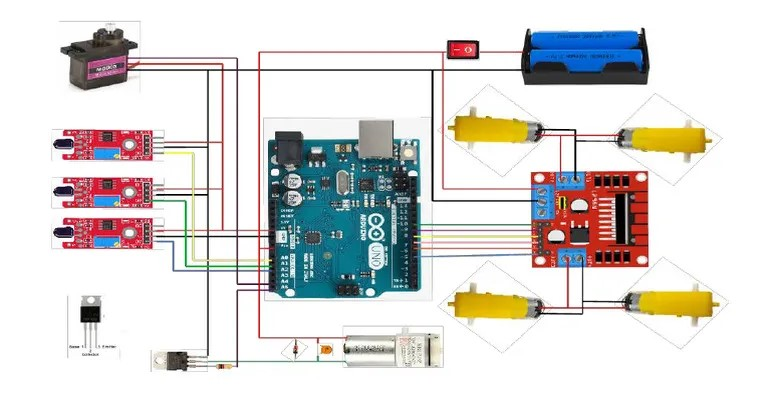

Descrição detalhada do Robô Bombeiro
Entenda a motivação, objetivos, funcionamento geral e arquitetura do protótipo desenvolvido.
1. Motivação e objetivos
Motivação
Incêndios em ambientes confinados representam alto risco para equipes de resgate. Antes de qualquer atuação, é necessário inspecionar o local, o que pode expor bombeiros a fumaça, calor extremo e estruturas instáveis. Um robô capaz de se aproximar do foco e iniciar o combate com água reduz a exposição humana e contribui para maior segurança operacional.
Objetivo Geral
Desenvolver um protótipo de caminhão robótico que localiza uma fonte de calor por meio de sensores térmicos, se desloca autonomamente até o foco e aciona uma bomba d’água para combate direcionado.
Objetivos Específicos
- Integrar sensores térmicos com um microcontrolador de baixo custo.
- Controlar quatro motores (um por roda) de forma coordenada.
- Implementar lógica de navegação baseada em leitura de temperatura.
- Documentar todo processo em formato de site técnico.
2. Arquitetura geral do sistema
O robô é dividido em quatro blocos principais: sensoriamento térmico, processamento, atuação, mecânica e bombeamento de água.
Diagrama usado na construção do robô bombeiro.
3. Componentes e suprimentos
| Componente | Descrição | Referência |
|---|---|---|
| Placa de ensaio | Protoboard para montagem dos circuitos | PB-830 |
| Cabeamento | 25x Jumpers macho-macho, macho-fêmea, e fêmea-fêmea | JMP-MM / JMP-MF / JMP-FF |
| Estrutura | Chassi com chapa de MDF | CH-MDF-4R |
| Microcontrolador | Arduino Uno - Placa principal | UNO-R3 |
| Motores DC | 4x Motores DC com caixa de redução | TT-MOTOR-DC-3-6V |
| Rodas | 4x Rodas compatíveis com os motores | RD-65-TT |
| Módulo | Driver de motor | L298N |
| Servo motor | Micro servo motor | MG90S |
| Reservatório | Reservatório de água com garrafa pet | RES-PET-500ML |
| Bomba d'água | Mini bomba 5V | PUMP-5V |
| Tubo de silicone | Tubo de 30cm para conduzir água | TS-4MM-30CM |
| Fonte de alimentação | Bateria 3.7V li-on | 18650-3.7V |
| Chaveamento | Interruptor liga/desliga | SW-ON-OFF |
| Capacitores | 3x capacitores | CAP-100NF / CAP-10UF / CAP-100UF |
| Diodo | 1x Diodo | 1N4148 |
| Transistor | 1x Transistor NPN | TIP122 |
| Resistores | 1x Resistor 1kΩ | RES-1K-1/4W |
| Bombeamento | 1x borrifador | BOR-50ML |
| Sensores Térmicos | 3x Sensores de temperatura | KY-026 |
4. Aplicativos e ferramentas utilizadas
- Arduino IDE - Desenvolvimento e upload do código para o microcontrolador.
- Tinkercad - Diagramação dos circuitos eletrônicos / testes iniciais.
- GitHub - Hospedagem do código-fonte e documentação do projeto.
- Visual Studio Code - Edição de arquivos HTML, CSS e JavaScript para o site do projeto.
- YouTube - Hospedagem do vídeo final de demonstração.